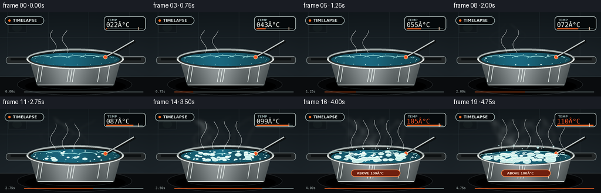
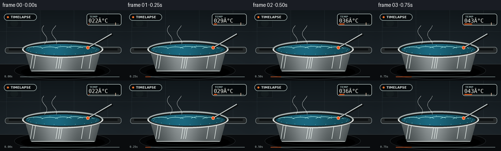
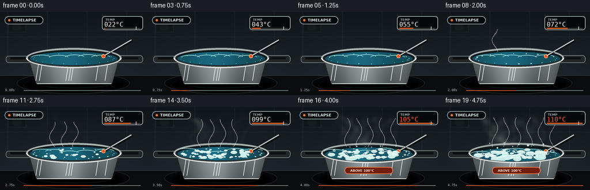
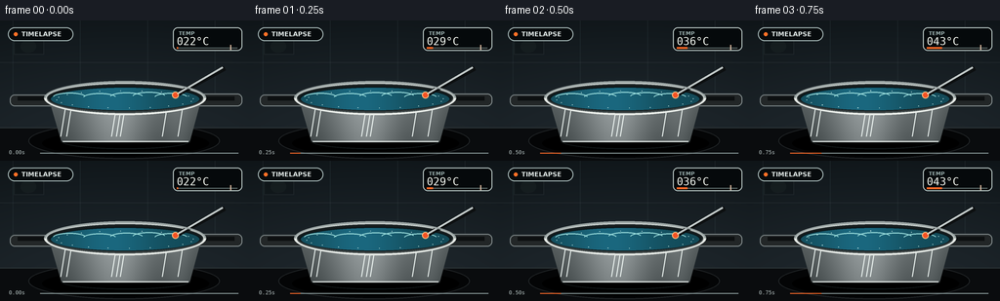

CODING AGENTS AS PIXEL WORLD MODELS
traex/GPT-5.6-Sol · phygen_106
点击播放 · 原生 RGB 像素
逐轮保存的候选
回放视频、检查图与代码变化。
每份候选均可单独播放。实际图片检查记录在下方工具轨迹中。
候选 01播放与检查图
点击播放 · 原生 RGB 像素


展开代码变化
--- 上一保存版本
+++ 本次保存版本
@@ -0,0 +1,256 @@
+from pathlib import Path
+import math, random
+import numpy as np
+from PIL import Image, ImageDraw, ImageFont, ImageFilter
+import artifact_io
+
+# Deterministic, hand-rendered time-lapse of a saucepan coming to a rolling boil.
+W,H,N = 256,144,20
+S=4
+random.seed(106)
+ROOT=Path(__file__).resolve().parent
+FONT='/usr/share/fonts/truetype/dejavu/DejaVuSans.ttf'
+FONT_B='/usr/share/fonts/truetype/dejavu/DejaVuSans-Bold.ttf'
+FONT_M='/usr/share/fonts/truetype/dejavu/DejaVuSansMono.ttf'
+
+def font(size,bold=False,mono=False):
+ return ImageFont.truetype(FONT_M if mono else (FONT_B if bold else FONT), int(size*S))
+
+def lerp(a,b,t): return a+(b-a)*t
+def clamp(x,a=0,b=1): return max(a,min(b,x))
+def smooth(a,b,x):
+ t=clamp((x-a)/(b-a)); return t*t*(3-2*t)
+
+def ellipse_mask(size, box, blur=0):
+ m=Image.new('L',size,0); d=ImageDraw.Draw(m); d.ellipse(tuple(int(v*S) for v in box),fill=255)
+ if blur: m=m.filter(ImageFilter.GaussianBlur(blur*S))
+ return m
+
+def rounded(d,box,r,fill,outline=None,width=1):
+ d.rounded_rectangle(tuple(int(v*S) for v in box),radius=int(r*S),fill=fill,outline=outline,width=int(width*S))
+
+def draw_curve(draw, pts, fill, width):
+ # Smooth polyline through densely sampled procedural points.
+ draw.line([(int(x*S),int(y*S)) for x,y in pts],fill=fill,width=max(1,int(width*S)),joint='curve')
+
+# Bubble seeds: normalized position within visible water ellipse, birth threshold, phase, max size.
+rng=random.Random(4106)
+bubbles=[]
+for i in range(52):
+ # uniform-ish in ellipse
+ while True:
+ x=rng.uniform(-1,1); y=rng.uniform(-1,1)
+ if x*x+y*y < .92: break
+ birth=rng.uniform(.18,.88)
+ phase=rng.uniform(0,math.tau)
+ size=rng.uniform(1.2,5.8)
+ bubbles.append((x,y,birth,phase,size))
+
+# Condensation specks on inner rim / droplets
+specks=[(rng.uniform(-.92,.92),rng.uniform(-.62,.5),rng.uniform(.32,.8),rng.uniform(.5,1.5)) for _ in range(24)]
+
+def make_frame(fi):
+ t=fi/(N-1)
+ boil=smooth(.43,.82,t)
+ vigorous=smooth(.67,1.0,t)
+ temp=22 + 88*(1-(1-t)**1.55) # 22 -> 110 C, clear prompt cue
+ im=Image.new('RGB',(W*S,H*S),(17,22,25)); p=im.load()
+ # Moody kitchen backsplash gradient, warming subtly under heat.
+ for y in range(H*S):
+ yy=y/(H*S-1)
+ for x in range(W*S):
+ xx=x/(W*S-1)
+ vign=1-.33*((xx-.5)**2+(yy-.48)**2)
+ warm=vigorous*7*max(0,1-abs(xx-.5)*2)*max(0,(yy-.48)*2)
+ p[x,y]=(int((18+16*yy+warm)*vign),int((25+18*yy+warm*.45)*vign),int((29+20*yy)*vign))
+ d=ImageDraw.Draw(im,'RGBA')
+ # tile seams and soft fixtures
+ for x in (13,82,151,220): d.line((x*S,0,x*S,83*S),fill=(116,137,142,22),width=1*S)
+ d.line((0,43*S,W*S,43*S),fill=(132,149,150,20),width=S)
+ d.rectangle((14*S,17*S,45*S,35*S),fill=(6,10,12,55),outline=(92,108,109,40),width=S)
+ d.ellipse((21*S,20*S,37*S,33*S),fill=(50,60,61,38))
+ # counter and cooktop
+ d.rectangle((0,110*S,W*S,H*S),fill=(10,12,14,255))
+ d.line((0,110*S,W*S,110*S),fill=(119,135,139,70),width=S)
+ d.ellipse((29*S,105*S,225*S,142*S),fill=(0,0,0,145),outline=(81,91,95,95),width=S)
+ d.ellipse((62*S,114*S,194*S,136*S),outline=(156,62,30,int(35+150*vigorous)),width=2*S)
+ # burner glow blur
+ glow=Image.new('RGBA',im.size,(0,0,0,0)); gd=ImageDraw.Draw(glow)
+ gd.ellipse((70*S,115*S,188*S,135*S),outline=(255,70,18,int(20+165*smooth(.25,.9,t))),width=4*S)
+ glow=glow.filter(ImageFilter.GaussianBlur(5*S)); im=Image.alpha_composite(im.convert('RGBA'),glow); d=ImageDraw.Draw(im,'RGBA')
+
+ # shadow behind pot
+ d.ellipse((43*S,113*S,214*S,139*S),fill=(0,0,0,130))
+ # Handles, drawn behind body
+ rounded(d,(10,76,61,88),5,(35,39,40,255),outline=(122,131,132,125),width=1)
+ rounded(d,(196,75,248,88),5,(34,38,39,255),outline=(130,139,140,120),width=1)
+ d.rectangle((18*S,78*S,54*S,82*S),fill=(13,16,17,180))
+ d.rectangle((202*S,78*S,240*S,82*S),fill=(13,16,17,180))
+ # side attachment rivets
+ d.ellipse((48*S,79*S,55*S,86*S),fill=(161,168,168,210),outline=(24,27,27,170),width=S)
+ d.ellipse((201*S,79*S,208*S,86*S),fill=(161,168,168,210),outline=(24,27,27,170),width=S)
+
+ # Pot body: trapezoid with brushed stainless vertical gradient
+ body=Image.new('RGBA',im.size,(0,0,0,0)); bd=ImageDraw.Draw(body,'RGBA')
+ poly=[(49*S,77*S),(207*S,77*S),(194*S,125*S),(63*S,125*S)]
+ bd.polygon(poly,fill=(130,139,140,255))
+ mask=Image.new('L',im.size,0); md=ImageDraw.Draw(mask); md.polygon(poly,fill=255)
+ grad=Image.new('RGBA',im.size,(0,0,0,0)); gp=grad.load()
+ for y in range(72*S,127*S):
+ yy=(y/S-77)/48
+ for x in range(43*S,213*S):
+ nx=(x/S-49)/158
+ hi=50*math.exp(-((nx-.42)/.22)**2)+20*math.exp(-((nx-.85)/.09)**2)-45*abs(nx-.5)
+ base=112+hi-32*yy
+ gp[x,y]=(int(clamp(base,25,205)),int(clamp(base+7,25,212)),int(clamp(base+8,25,214)),255)
+ body=Image.composite(grad,body,mask)
+ im=Image.alpha_composite(im,body); d=ImageDraw.Draw(im,'RGBA')
+ # brushed highlights
+ for x,a in [(67,24),(73,12),(119,35),(124,48),(128,38),(171,15),(187,22)]:
+ d.line((x*S,88*S,(x-5)*S,119*S),fill=(236,244,241,a),width=S)
+ d.line((64*S,124*S,193*S,124*S),fill=(234,240,237,100),width=S)
+ d.arc((63*S,116*S,194*S,132*S),0,180,fill=(18,24,25,100),width=S)
+
+ # Outer rim and dark interior
+ d.ellipse((45*S,62*S,211*S,97*S),fill=(56,64,65,255),outline=(213,220,217,240),width=3*S)
+ d.ellipse((49*S,66*S,207*S,93*S),fill=(8,22,26,255),outline=(22,28,29,255),width=2*S)
+ # Water surface lowers a little as vapor is lost
+ sy=69+2.4*vigorous
+ water_box=(52,sy,204,92+2.4*vigorous)
+ # water gradient clipped to ellipse
+ wm=ellipse_mask(im.size,water_box)
+ water=Image.new('RGBA',im.size,(0,0,0,0)); wp=water.load()
+ for y in range(int(sy*S),int((94+2.5*vigorous)*S)):
+ for x in range(50*S,206*S):
+ xx=x/S
+ glint=30*math.exp(-((xx-113)/46)**2)
+ wobble=9*math.sin(xx*.12+fi*.43)*boil
+ wp[x,y]=(int(19+glint*.25),int(74+glint+wobble),int(88+glint*1.3+wobble),255)
+ water=Image.composite(water,Image.new('RGBA',im.size),wm)
+ im=Image.alpha_composite(im,water); d=ImageDraw.Draw(im,'RGBA')
+ # moving caustic/reflection bands
+ for k in range(5):
+ yy=78 + 5*math.sin(k*1.7+fi*.37)*(0.15+boil*.55)
+ x0=69+k*27+5*math.sin(fi*.25+k)
+ d.arc((int((x0-15)*S),int((yy-4)*S),int((x0+19)*S),int((yy+5)*S)),190,345,
+ fill=(159,226,224,int(25+70*boil)),width=S)
+ # thermometer probe entering from upper right
+ d.line((230*S,49*S,181*S,76*S),fill=(12,15,16,190),width=5*S)
+ d.line((228*S,48*S,180*S,76*S),fill=(192,200,199,255),width=2*S)
+ d.ellipse((176*S,73*S,183*S,80*S),fill=(245,80,35,245),outline=(255,185,120,180),width=S)
+
+ # Surface bubbles; quantity and violence increase over time.
+ # Clip conceptually by seeds in ellipse.
+ for j,(bx,by,birth,phase,sz) in enumerate(bubbles):
+ activity=smooth(birth-.13,birth+.06,boil)
+ if activity<=.01: continue
+ pulse=(.5+.5*math.sin(fi*(.72+vigorous*.45)+phase))
+ # In the rolling stage, bubbles continually swell and collapse.
+ rr=(.35+activity*(.45+.8*pulse))*sz*(.6+vigorous*.55)
+ cx=128+bx*70
+ cy=(80.5+2*vigorous)+by*9.1
+ # convection drift
+ cx += math.sin(fi*.55+phase)*1.8*boil
+ cy += math.cos(fi*.41+phase)*.7*boil
+ alpha=int(45+175*activity)
+ fill=(198,236,232,int(alpha*(.15+.35*vigorous)))
+ d.ellipse(((cx-rr)*S,(cy-rr*.48)*S,(cx+rr)*S,(cy+rr*.48)*S),fill=fill,
+ outline=(220,248,243,alpha),width=max(S,int(.7*S)))
+ if rr>2.2:
+ d.arc(((cx-rr*.62)*S,(cy-rr*.3)*S,(cx+rr*.62)*S,(cy+rr*.3)*S),185,330,
+ fill=(255,255,250,int(alpha*.75)),width=S)
+ # Tiny pre-boil bubbles around edge
+ edgeact=smooth(.08,.48,t)*(1-.25*vigorous)
+ for j in range(20):
+ ang=math.tau*j/20+0.25
+ cx=128+70*math.cos(ang); cy=81+9*math.sin(ang)
+ rr=.45+1.0*edgeact*(.5+.5*math.sin(fi*.52+j))
+ d.ellipse(((cx-rr)*S,(cy-rr*.55)*S,(cx+rr)*S,(cy+rr*.55)*S),fill=(210,243,239,int(150*edgeact)))
+ # Rolling boil white turbulent foam arcs
+ if vigorous>0:
+ for k in range(11):
+ cx=67+k*12.2+5*math.sin(fi*.8+k*1.9)
+ cy=79+4*math.sin(fi*.72+k*.9)
+ rw=(3.5+4*((k*7+fi*3)%9)/9)*vigorous
+ d.arc(((cx-rw)*S,(cy-rw*.6)*S,(cx+rw)*S,(cy+rw*.6)*S),0,330,
+ fill=(232,250,246,int(190*vigorous)),width=max(S,int(1.2*S)))
+ # droplets tossed just above water
+ for k in range(8):
+ phase=(fi*.91+k*1.71)%math.tau
+ x=82+k*13+7*math.sin(k*3.1)
+ y=72-abs(math.sin(phase))*9*vigorous
+ r=(.8+1.2*(k%3)/2)*vigorous
+ d.ellipse(((x-r)*S,(y-r)*S,(x+r)*S,(y+r)*S),fill=(200,240,238,int(185*vigorous)))
+
+ # front lip redraw for occlusion / depth
+ d.arc((45*S,62*S,211*S,97*S),0,180,fill=(229,233,229,245),width=3*S)
+ d.arc((48*S,65*S,208*S,95*S),0,180,fill=(71,78,78,255),width=S)
+ d.arc((45*S,62*S,211*S,97*S),180,360,fill=(151,161,160,255),width=2*S)
+
+ # Steam plumes (blurred base + crisp centers), amount increases strongly.
+ steam=smooth(.28,.96,t)
+ st=Image.new('RGBA',im.size,(0,0,0,0)); sd=ImageDraw.Draw(st,'RGBA')
+ plume_count=2+int(9*steam)
+ for k in range(plume_count):
+ life=(fi*.19+k*.137)%1
+ xbase=79+(k*17.3)%101
+ ybase=70
+ top=12+life*10
+ pts=[]
+ steps=32
+ for q in range(steps):
+ u=q/(steps-1)
+ y=ybase-u*(ybase-top)
+ drift=(6+9*u)*math.sin(u*5.4+k*1.31+fi*.27)+4*math.sin(u*10+k)
+ x=xbase+drift+2*math.sin(fi*.17+k)
+ pts.append((x,y))
+ fade=math.sin(math.pi*life)**.45
+ a=int((28+78*steam)*fade)
+ draw_curve(sd,pts,(232,242,239,a),1.2+2.7*steam)
+ blur=st.filter(ImageFilter.GaussianBlur((2.1+2.3*steam)*S))
+ im=Image.alpha_composite(im,blur)
+ # faint sharp strands for legibility
+ sd2=ImageDraw.Draw(im,'RGBA')
+ for k in range(2+int(4*steam)):
+ pts=[]; xbase=91+k*20
+ for q in range(22):
+ u=q/21; pts.append((xbase+5*math.sin(u*6+k+fi*.21),69-u*(38+13*steam)))
+ draw_curve(sd2,pts,(245,250,247,int(18+42*steam)),.65)
+ d=ImageDraw.Draw(im,'RGBA')
+
+ # Heads-up timelapse / temperature panel, high contrast and stable.
+ rounded(d,(8,7,75,21),7,(7,11,13,178),outline=(163,181,180,45),width=1)
+ d.ellipse((14*S,12*S,18*S,16*S),fill=(255,112,38,255))
+ d.text((22*S,10*S),'TIMELAPSE',font=font(6.5,bold=True),fill=(225,233,231,230))
+ rounded(d,(177,7,248,31),5,(5,9,11,210),outline=(184,199,196,75),width=1)
+ d.text((183*S,10*S),'TEMP',font=font(5.3,bold=True),fill=(157,178,177,230))
+ # Red when crossing 100C
+ tc=(255,91,39,255) if temp>=100 else (242,247,240,255)
+ val=f'{temp:03.0f}°C'
+ d.text((181*S,15*S),val,font=font(11,bold=True,mono=True),fill=tc)
+ # temp progress bar and 100 degree marker
+ x0,x1=181,243; yb=28
+ d.line((x0*S,yb*S,x1*S,yb*S),fill=(90,105,104,150),width=S)
+ frac=clamp((temp-20)/90)
+ d.line((x0*S,yb*S,int((x0+(x1-x0)*frac)*S),yb*S),fill=(255,102,37,240),width=2*S)
+ mark=x0+(x1-x0)*(80/90)
+ d.line((mark*S,25*S,mark*S,30*S),fill=(255,218,189,210),width=S)
+ # above 100°C badge appears in final section, reinforces requested state
+ if temp>=100:
+ rounded(d,(86,104,170,116),6,(112,31,14,190),outline=(255,135,73,145),width=1)
+ d.text((96*S,107*S),'ABOVE 100°C',font=font(5.7,bold=True),fill=(255,230,213,245))
+
+ # subtle timestamp/progress
+ d.text((9*S,132*S),f'{fi/4:04.2f}s',font=font(5.5,mono=True),fill=(179,192,191,150))
+ d.line((41*S,136*S,244*S,136*S),fill=(133,149,149,45),width=S)
+ d.line((41*S,136*S,int((41+203*t)*S),136*S),fill=(239,102,40,150),width=S)
+
+ im=im.convert('RGB').resize((W,H),Image.Resampling.LANCZOS)
+ return np.asarray(im,dtype=np.uint8)
+
+def main():
+ frames=np.stack([make_frame(i) for i in range(N)],axis=0)
+ artifact_io.save(frames,ROOT)
+ print('saved',frames.shape,frames.dtype)
+
+if __name__=='__main__': main()
候选 02播放与检查图
点击播放 · 原生 RGB 像素


展开代码变化
--- 上一保存版本
+++ 本次保存版本
@@ -190,7 +190,7 @@
# Steam plumes (blurred base + crisp centers), amount increases strongly.
steam=smooth(.28,.96,t)
st=Image.new('RGBA',im.size,(0,0,0,0)); sd=ImageDraw.Draw(st,'RGBA')
- plume_count=2+int(9*steam)
+ plume_count=0 if steam < .01 else 1+int(10*steam)
for k in range(plume_count):
life=(fi*.19+k*.137)%1
xbase=79+(k*17.3)%101
@@ -205,17 +205,17 @@
x=xbase+drift+2*math.sin(fi*.17+k)
pts.append((x,y))
fade=math.sin(math.pi*life)**.45
- a=int((28+78*steam)*fade)
+ a=int((18+88*steam)*fade*steam)
draw_curve(sd,pts,(232,242,239,a),1.2+2.7*steam)
blur=st.filter(ImageFilter.GaussianBlur((2.1+2.3*steam)*S))
im=Image.alpha_composite(im,blur)
# faint sharp strands for legibility
sd2=ImageDraw.Draw(im,'RGBA')
- for k in range(2+int(4*steam)):
+ for k in range(0 if steam < .03 else 1+int(5*steam)):
pts=[]; xbase=91+k*20
for q in range(22):
u=q/21; pts.append((xbase+5*math.sin(u*6+k+fi*.21),69-u*(38+13*steam)))
- draw_curve(sd2,pts,(245,250,247,int(18+42*steam)),.65)
+ draw_curve(sd2,pts,(245,250,247,int((12+48*steam)*steam)),.65)
d=ImageDraw.Draw(im,'RGBA')
# Heads-up timelapse / temperature panel, high contrast and stable.
@@ -226,7 +226,7 @@
d.text((183*S,10*S),'TEMP',font=font(5.3,bold=True),fill=(157,178,177,230))
# Red when crossing 100C
tc=(255,91,39,255) if temp>=100 else (242,247,240,255)
- val=f'{temp:03.0f}°C'
+ val=f'{temp:03.0f}\N{DEGREE SIGN}C'
d.text((181*S,15*S),val,font=font(11,bold=True,mono=True),fill=tc)
# temp progress bar and 100 degree marker
x0,x1=181,243; yb=28
@@ -238,7 +238,7 @@
# above 100°C badge appears in final section, reinforces requested state
if temp>=100:
rounded(d,(86,104,170,116),6,(112,31,14,190),outline=(255,135,73,145),width=1)
- d.text((96*S,107*S),'ABOVE 100°C',font=font(5.7,bold=True),fill=(255,230,213,245))
+ d.text((96*S,107*S),'ABOVE 100\N{DEGREE SIGN}C',font=font(5.7,bold=True),fill=(255,230,213,245))
# subtle timestamp/progress
d.text((9*S,132*S),f'{fi/4:04.2f}s',font=font(5.5,mono=True),fill=(179,192,191,150))
可观测工具轨迹
实际执行的命令与返回图片。
命令 1exit 0
/bin/bash -lc "cat prompt.txt && printf '\\n---RULES---\\n' && cat GENERATION_RULES.md && printf '\\n---SPEC---\\n' && cat task_spec.json"
命令 2exit 0
/bin/bash -lc "find . -maxdepth 2 -type f -printf '%p %s bytes\\n' | sort"
命令 3exit 0
/bin/bash -lc "sed -n '1,240p' artifact_io.py"
命令 4exit 0
/bin/bash -lc 'fc-list | head -20'
命令 5exit 0
/bin/bash -lc "cat > generate.py <<'PY'
from pathlib import Path
import math, random
import numpy as np
from PIL import Image, ImageDraw, ImageFont, ImageFilter
import artifact_io
# Deterministic, hand-rendered time-lapse of a saucepan coming to a rolling boil.
W,H,N = 256,144,20
S=4
random.seed(106)
ROOT=Path(__file__).resolve().parent
FONT='/usr/share/fonts/truetype/dejavu/DejaVuSans.ttf'
FONT_B='/usr/share/fonts/truetype/dejavu/DejaVuSans-Bold.ttf'
FONT_M='/usr/share/fonts/truetype/dejavu/DejaVuSansMono.ttf'
def font(size,bold=False,mono=False):
return ImageFont.truetype(FONT_M if mono else (FONT_B if bold else FONT), int(size*S))
def lerp(a,b,t): return a+(b-a)*t
def clamp(x,a=0,b=1): return max(a,min(b,x))
def smooth(a,b,x):
t=clamp((x-a)/(b-a)); return t*t*(3-2*t)
def ellipse_mask(size, box, blur=0):
m=Image.new('L',size,0); d=ImageDraw.Draw(m); d.ellipse(tuple(int(v*S) for v in box),fill=255)
if blur: m=m.filter(ImageFilter.GaussianBlur(blur*S))
return m
def rounded(d,box,r,fill,outline=None,width=1):
d.rounded_rectangle(tuple(int(v*S) for v in box),radius=int(r*S),fill=fill,outline=outline,width=int(width*S))
def draw_curve(draw, pts, fill, width):
# Smooth polyline through densely sampled procedural points.
draw.line([(int(x*S),int(y*S)) for x,y in pts],fill=fill,width=max(1,int(width*S)),joint='curve')
# Bubble seeds: normalized position within visible water ellipse, birth threshold, phase, max size.
rng=random.Random(4106)
bubbles=[]
for i in range(52):
# uniform-ish in ellipse
while True:
x=rng.uniform(-1,1); y=rng.uniform(-1,1)
if x*x+y*y < .92: break
birth=rng.uniform(.18,.88)
phase=rng.uniform(0,math.tau)
size=rng.uniform(1.2,5.8)
bubbles.append((x,y,birth,phase,size))
# Condensation specks on inner rim / droplets
specks=[(rng.uniform(-.92,.92),rng.uniform(-.62,.5),rng.uniform(.32,.8),rng.uniform(.5,1.5)) for _ in range(24)]
def make_frame(fi):
t=fi/(N-1)
boil=smooth(.43,.82,t)
vigorous=smooth(.67,1.0,t)
temp=22 + 88*(1-(1-t)**1.55) # 22 -> 110 C, clear prompt cue
im=Image.new('RGB',(W*S,H*S),(17,22,25)); p=im.load()
# Moody kitchen backsplash gradient, warming subtly under heat.
for y in range(H*S):
yy=y/(H*S-1)
for x in range(W*S):
xx=x/(W*S-1)
vign=1-.33*((xx-.5)**2+(yy-.48)**2)
warm=vigorous*7*max(0,1-abs(xx-.5)*2)*max(0,(yy-.48)*2)
p[x,y]=(int((18+16*yy+warm)*vign),int((25+18*yy+warm*.45)*vign),int((29+20*yy)*vign))
d=ImageDraw.Draw(im,'RGBA')
# tile seams and soft fixtures
for x in (13,82,151,220): d.line((x*S,0,x*S,83*S),fill=(116,137,142,22),width=1*S)
d.line((0,43*S,W*S,43*S),fill=(132,149,150,20),width=S)
d.rectangle((14*S,17*S,45*S,35*S),fill=(6,10,12,55),outline=(92,108,109,40),width=S)
d.ellipse((21*S,20*S,37*S,33*S),fill=(50,60,61,38))
# counter and cooktop
d.rectangle((0,110*S,W*S,H*S),fill=(10,12,14,255))
d.line((0,110*S,W*S,110*S),fill=(119,135,139,70),width=S)
d.ellipse((29*S,105*S,225*S,142*S),fill=(0,0,0,145),outline=(81,91,95,95),width=S)
d.ellipse((62*S,114*S,194*S,136*S),outline=(156,62,30,int(35+150*vigorous)),width=2*S)
# burner glow blur
glow=Image.new('RGBA',im.size,(0,0,0,0)); gd=ImageDraw.Draw(glow)
gd.ellipse((70*S,115*S,188*S,135*S),outline=(255,70,18,int(20+165*smooth(.25,.9,t))),width=4*S)
glow=glow.filter(ImageFilter.GaussianBlur(5*S)); im=Image.alpha_composite(im.convert('RGBA'),glow); d=ImageDraw.Draw(im,'RGBA')
# shadow behind pot
d.ellipse((43*S,113*S,214*S,139*S),fill=(0,0,0,130))
# Handles, drawn behind body
rounded(d,(10,76,61,88),5,(35,39,40,255),outline=(122,131,132,125),width=1)
rounded(d,(196,75,248,88),5,(34,38,39,255),outline=(130,139,140,120),width=1)
d.rectangle((18*S,78*S,54*S,82*S),fill=(13,16,17,180))
d.rectangle((202*S,78*S,240*S,82*S),fill=(13,16,17,180))
# side attachment rivets
d.ellipse((48*S,79*S,55*S,86*S),fill=(161,168,168,210),outline=(24,27,27,170),width=S)
d.ellipse((201*S,79*S,208*S,86*S),fill=(161,168,168,210),outline=(24,27,27,170),width=S)
# Pot body: trapezoid with brushed stainless vertical gradient
body=Image.new('RGBA',im.size,(0,0,0,0)); bd=ImageDraw.Draw(body,'RGBA')
poly=[(49*S,77*S),(207*S,77*S),(194*S,125*S),(63*S,125*S)]
bd.polygon(poly,fill=(130,139,140,255))
mask=Image.new('L',im.size,0); md=ImageDraw.Draw(mask); md.polygon(poly,fill=255)
grad=Image.new('RGBA',im.size,(0,0,0,0)); gp=grad.load()
for y in range(72*S,127*S):
yy=(y/S-77)/48
for x in range(43*S,213*S):
nx=(x/S-49)/158
hi=50*math.exp(-((nx-.42)/.22)**2)+20*math.exp(-((nx-.85)/.09)**2)-45*abs(nx-.5)
base=112+hi-32*yy
gp[x,y]=(int(clamp(base,25,205)),int(clamp(base+7,25,212)),int(clamp(base+8,25,214)),255)
body=Image.composite(grad,body,mask)
im=Image.alpha_composite(im,body); d=ImageDraw.Draw(im,'RGBA')
# brushed highlights
for x,a in [(67,24),(73,12),(119,35),(124,48),(128,38),(171,15),(187,22)]:
d.line((x*S,88*S,(x-5)*S,119*S),fill=(236,244,241,a),width=S)
d.line((64*S,124*S,193*S,124*S),fill=(234,240,237,100),width=S)
d.arc((63*S,116*S,194*S,132*S),0,180,fill=(18,24,25,100),width=S)
# Outer rim and dark interior
d.ellipse((45*S,62*S,211*S,97*S),fill=(56,64,65,255),outline=(213,220,217,240),width=3*S)
d.ellipse((49*S,66*S,207*S,93*S),fill=(8,22,26,255),outline=(22,28,29,255),width=2*S)
# Water surface lowers a little as vapor is lost
sy=69+2.4*vigorous
water_box=(52,sy,204,92+2.4*vigorous)
# water gradient clipped to ellipse
wm=ellipse_mask(im.size,water_box)
water=Image.new('RGBA',im.size,(0,0,0,0)); wp=water.load()
for y in range(int(sy*S),int((94+2.5*vigorous)*S)):
for x in range(50*S,206*S):
xx=x/S
glint=30*math.exp(-((xx-113)/46)**2)
wobble=9*math.sin(xx*.12+fi*.43)*boil
wp[x,y]=(int(19+glint*.25),int(74+glint+wobble),int(88+glint*1.3+wobble),255)
water=Image.composite(water,Image.new('RGBA',im.size),wm)
im=Image.alpha_composite(im,water); d=ImageDraw.Draw(im,'RGBA')
# moving caustic/reflection bands
for k in range(5):
yy=78 + 5*math.sin(k*1.7+fi*.37)*(0.15+boil*.55)
x0=69+k*27+5*math.sin(fi*.25+k)
d.arc((int((x0-15)*S),int((yy-4)*S),int((x0+19)*S),int((yy+5)*S)),190,345,
fill=(159,226,224,int(25+70*boil)),width=S)
# thermometer probe entering from upper right
d.line((230*S,49*S,181*S,76*S),fill=(12,15,16,190),width=5*S)
d.line((228*S,48*S,180*S,76*S),fill=(192,200,199,255),width=2*S)
d.ellipse((176*S,73*S,183*S,80*S),fill=(245,80,35,245),outline=(255,185,120,180),width=S)
# Surface bubbles; quantity and violence increase over time.
# Clip conceptually by seeds in ellipse.
for j,(bx,by,birth,phase,sz) in enumerate(bubbles):
activity=smooth(birth-.13,birth+.06,boil)
if activity<=.01: continue
pulse=(.5+.5*math.sin(fi*(.72+vigorous*.45)+phase))
# In the rolling stage, bubbles continually swell and collapse.
rr=(.35+activity*(.45+.8*pulse))*sz*(.6+vigorous*.55)
cx=128+bx*70
cy=(80.5+2*vigorous)+by*9.1
# convection drift
cx += math.sin(fi*.55+phase)*1.8*boil
cy += math.cos(fi*.41+phase)*.7*boil
alpha=int(45+175*activity)
fill=(198,236,232,int(alpha*(.15+.35*vigorous)))
d.ellipse(((cx-rr)*S,(cy-rr*.48)*S,(cx+rr)*S,(cy+rr*.48)*S),fill=fill,
outline=(220,248,243,alpha),width=max(S,int(.7*S)))
if rr>2.2:
d.arc(((cx-rr*.62)*S,(cy-rr*.3)*S,(cx+rr*.62)*S,(cy+rr*.3)*S),185,330,
fill=(255,255,250,int(alpha*.75)),width=S)
# Tiny pre-boil bubbles around edge
edgeact=smooth(.08,.48,t)*(1-.25*vigorous)
for j in range(20):
ang=math.tau*j/20+0.25
cx=128+70*math.cos(ang); cy=81+9*math.sin(ang)
rr=.45+1.0*edgeact*(.5+.5*math.sin(fi*.52+j))
d.ellipse(((cx-rr)*S,(cy-rr*.55)*S,(cx+rr)*S,(cy+rr*.55)*S),fill=(210,243,239,int(150*edgeact)))
# Rolling boil white turbulent foam arcs
if vigorous>0:
for k in range(11):
cx=67+k*12.2+5*math.sin(fi*.8+k*1.9)
cy=79+4*math.sin(fi*.72+k*.9)
rw=(3.5+4*((k*7+fi*3)%9)/9)*vigorous
d.arc(((cx-rw)*S,(cy-rw*.6)*S,(cx+rw)*S,(cy+rw*.6)*S),0,330,
fill=(232,250,246,int(190*vigorous)),width=max(S,int(1.2*S)))
# droplets tossed just above water
for k in range(8):
phase=(fi*.91+k*1.71)%math.tau
x=82+k*13+7*math.sin(k*3.1)
y=72-abs(math.sin(phase))*9*vigorous
r=(.8+1.2*(k%3)/2)*vigorous
d.ellipse(((x-r)*S,(y-r)*S,(x+r)*S,(y+r)*S),fill=(200,240,238,int(185*vigorous)))
# front lip redraw for occlusion / depth
d.arc((45*S,62*S,211*S,97*S),0,180,fill=(229,233,229,245),width=3*S)
d.arc((48*S,65*S,208*S,95*S),0,180,fill=(71,78,78,255),width=S)
d.arc((45*S,62*S,211*S,97*S),180,360,fill=(151,161,160,255),width=2*S)
# Steam plumes (blurred base + crisp centers), amount increases strongly.
steam=smooth(.28,.96,t)
st=Image.new('RGBA',im.size,(0,0,0,0)); sd=ImageDraw.Draw(st,'RGBA')
plume_count=2+int(9*steam)
for k in range(plume_count):
life=(fi*.19+k*.137)%1
xbase=79+(k*17.3)%101
ybase=70
top=12+life*10
pts=[]
steps=32
for q in range(steps):
u=q/(steps-1)
y=ybase-u*(ybase-top)
drift=(6+9*u)*math.sin(u*5.4+k*1.31+fi*.27)+4*math.sin(u*10+k)
x=xbase+drift+2*math.sin(fi*.17+k)
pts.append((x,y))
fade=math.sin(math.pi*life)**.45
a=int((28+78*steam)*fade)
draw_curve(sd,pts,(232,242,239,a),1.2+2.7*steam)
blur=st.filter(ImageFilter.GaussianBlur((2.1+2.3*steam)*S))
im=Image.alpha_composite(im,blur)
# faint sharp strands for legibility
sd2=ImageDraw.Draw(im,'RGBA')
for k in range(2+int(4*steam)):
pts=[]; xbase=91+k*20
for q in range(22):
u=q/21; pts.append((xbase+5*math.sin(u*6+k+fi*.21),69-u*(38+13*steam)))
draw_curve(sd2,pts,(245,250,247,int(18+42*steam)),.65)
d=ImageDraw.Draw(im,'RGBA')
# Heads-up timelapse / temperature panel, high contrast and stable.
rounded(d,(8,7,75,21),7,(7,11,13,178),outline=(163,181,180,45),width=1)
d.ellipse((14*S,12*S,18*S,16*S),fill=(255,112,38,255))
d.text((22*S,10*S),'TIMELAPSE',font=font(6.5,bold=True),fill=(225,233,231,230))
rounded(d,(177,7,248,31),5,(5,9,11,210),outline=(184,199,196,75),width=1)
d.text((183*S,10*S),'TEMP',font=font(5.3,bold=True),fill=(157,178,177,230))
# Red when crossing 100C
tc=(255,91,39,255) if temp>=100 else (242,247,240,255)
val=f'{temp:03.0f}°C'
d.text((181*S,15*S),val,font=font(11,bold=True,mono=True),fill=tc)
# temp progress bar and 100 degree marker
x0,x1=181,243; yb=28
d.line((x0*S,yb*S,x1*S,yb*S),fill=(90,105,104,150),width=S)
frac=clamp((temp-20)/90)
d.line((x0*S,yb*S,int((x0+(x1-x0)*frac)*S),yb*S),fill=(255,102,37,240),width=2*S)
mark=x0+(x1-x0)*(80/90)
d.line((mark*S,25*S,mark*S,30*S),fill=(255,218,189,210),width=S)
# above 100°C badge appears in final section, reinforces requested state
if temp>=100:
rounded(d,(86,104,170,116),6,(112,31,14,190),outline=(255,135,73,145),width=1)
d.text((96*S,107*S),'ABOVE 100°C',font=font(5.7,bold=True),fill=(255,230,213,245))
# subtle timestamp/progress
d.text((9*S,132*S),f'{fi/4:04.2f}s',font=font(5.5,mono=True),fill=(179,192,191,150))
d.line((41*S,136*S,244*S,136*S),fill=(133,149,149,45),width=S)
d.line((41*S,136*S,int((41+203*t)*S),136*S),fill=(239,102,40,150),width=S)
im=im.convert('RGB').resize((W,H),Image.Resampling.LANCZOS)
return np.asarray(im,dtype=np.uint8)
def main():
frames=np.stack([make_frame(i) for i in range(N)],axis=0)
artifact_io.save(frames,ROOT)
print('saved',frames.shape,frames.dtype)
if __name__=='__main__': main()
PY
python generate.py"命令 6exit 0
/bin/bash -lc "grep -n \"plume_count\\|a=int\\|range(2+\\|draw_curve(sd2\\|val=f\\|ABOVE\" generate.py | cat -v"
命令 7exit 0
/bin/bash -lc "python - <<'PY'
p='generate.py'
s=open(p).read()
s=s.replace('plume_count=2+int(9*steam)', \"plume_count=0 if steam < .01 else 1+int(10*steam)\")
s=s.replace('a=int((28+78*steam)*fade)', 'a=int((18+88*steam)*fade*steam)')
s=s.replace('for k in range(2+int(4*steam)):', 'for k in range(0 if steam < .03 else 1+int(5*steam)):')
s=s.replace('int(18+42*steam)),.65)', 'int((12+48*steam)*steam)),.65)')
# Avoid encoding ambiguity in source, PIL font supports the degree glyph.
lines=s.splitlines()
for i,line in enumerate(lines):
if \"val=f'{temp:03.0f}\" in line:
lines[i]=\" val=f'{temp:03.0f}\\\\N{DEGREE SIGN}C'\"
if \"'ABOVE 100\" in line:
lines[i]=\" d.text((96*S,107*S),'ABOVE 100\\\\N{DEGREE SIGN}C',font=font(5.7,bold=True),fill=(255,230,213,245))\"
open(p,'w').write('\\n'.join(lines)+'\\n')
PY
python generate.py"命令 8exit 0
/bin/bash -lc "python - <<'PY'
import numpy as np
from PIL import Image
z=np.load('pixels.npz')['pixels']
print('pixels',z.shape,z.dtype,'frames',len(list(__import__('pathlib').Path('frames').glob('*.png'))))
for i in [0,5,10,15,19]:
im=np.array(Image.open(f'frames/{i:02d}.png'))
print(i,im.shape,im.dtype,round(im.mean(),2),len(np.unique(im.reshape(-1,3),axis=0)))
PY
ls -lh pixels.npz index.html inspection.png generate.py"视觉工具实际返回图片 1

视觉工具实际返回图片 2

保存候选 2 份；完成命令 8 次；可验证图片返回 2 张。原始 API 响应与完整日志保留在本地。